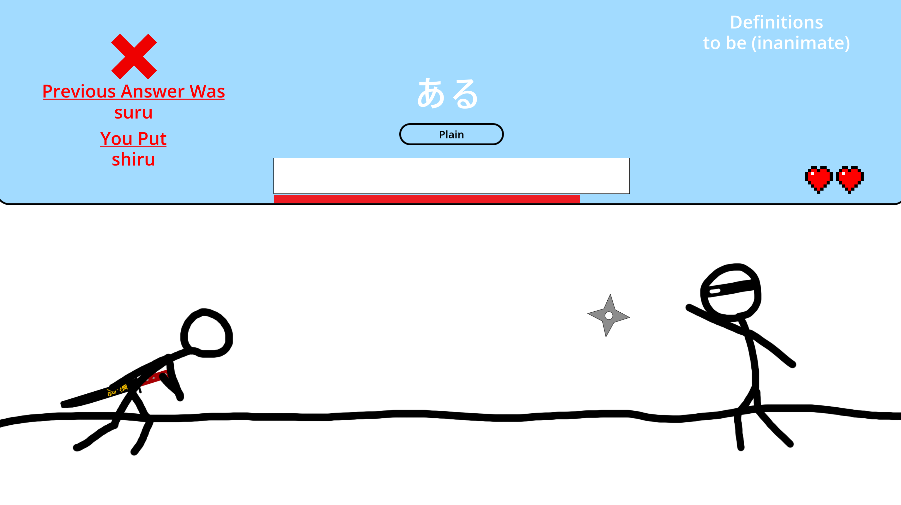
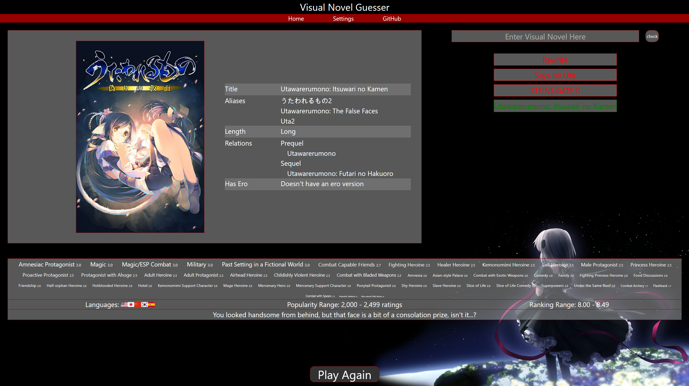
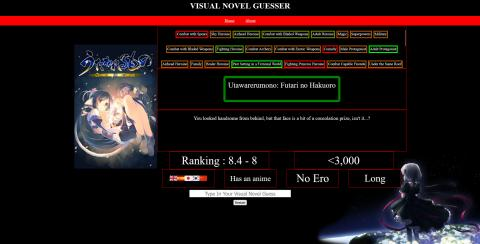

Internal Knowledge Assistant
May 2026
Terraform
AWS Bedrock
Lambda
DynamoDB
Built a RAG-based internal knowledge assistant on AWS Bedrock and
Lambda
Designed full cloud infrastructure as code with Terraform, like
API Gateway and DynamoDB
Implemented vector search via Bedrock Knowledge Base to quote from
company documents
Supports multi-turn conversations with persistent chat history
stored in DynamoDB per user
github
S3 Backup Automation
Apr – May 2026
Terraform
AWS
Lambda
SNS
Automated S3 backup system using AWS Backup with scheduled weekday
jobs and configurable retention policies
Built SNS notification pipeline with Lambda to deliver
human-readable success/failure alerts via email and SMS
Wrote infrastructure as code in Terraform with modular,
variable-driven configuration and input validation
github
RoR2 Mod - Even More League Items
Jan – Feb 2026
C#
Unity
ROR2API
Developed a mod using C#, the Unity Engine, and ROR2API
Designed and implemented a custom in-game shop system driven
through the chat interface
Created 9 custom items, including 5 items that dynamically read
and modify the player’s inventory via the custom shop logic
Reverse engineered and analyzed API source code to implement
advanced features due to limited official documentation
github

Japanese Conjugation Game
Aug – Nov 2025
Godot
C#
JSON
Type the Japanese verb or adjective given its conjugated form (ex.
polite tense)
Written in C# per gaming industry standards
Leveraged JSONs to create adjustable word lists and settings
Used the Godot game engine to implement timers, scenes, and
animations
github

Visual Novel Guesser 2
Oct – Nov 2025
Svelte
TypeScript
Written in TypeScript and Svelte to enable an interactable and
reactable UI
Implemented auto–complete with array manipulation
Including maps, traversals and other optimizations
Utilized the Visual Novel Data Base API to get novel tags for
hints (ex. mystery)
github

Visual Novel Guesser
HTML
CSS
JavaScript
The user has 9 guesses, each guess reveals 1 hint (ex. language)
Written in JavaScript to enable an interactable UI
Implemented auto–complete with array manipulation
Utilized the Visual Novel Data Base API to get novel tags for
hints (ex. mystery)
github
Low Level Tic-Tac-Toe
MIPS Assembly
A player vs computer game, similar to tic-tac-toe, in a 6 by 6
table
Legal moves are determined by random number generation
Written in MIPS assembly
github